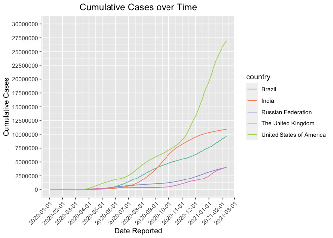

Our Data Analysis
These are the steps we took to analyze our data.
Load the libraries
library(tidyverse)## -- Attaching packages --------------------------------------- tidyverse 1.3.0 --## √ ggplot2 3.3.3 √ purrr 0.3.4
## √ tibble 3.0.6 √ dplyr 1.0.4
## √ tidyr 1.1.2 √ stringr 1.4.0
## √ readr 1.4.0 √ forcats 0.5.1## Warning: package 'tibble' was built under R version 4.0.4## Warning: package 'tidyr' was built under R version 4.0.4## -- Conflicts ------------------------------------------ tidyverse_conflicts() --
## x dplyr::filter() masks stats::filter()
## x dplyr::lag() masks stats::lag()library(janitor)##
## Attaching package: 'janitor'## The following objects are masked from 'package:stats':
##
## chisq.test, fisher.testlibrary(here)## here() starts at D:/GitHub Database/Course BIS15L/group8-finalprojectlibrary(naniar)
library(skimr)##
## Attaching package: 'skimr'## The following object is masked from 'package:naniar':
##
## n_complete
Cleaning Up the Data
Load the data frame
covid <- readr::read_csv("data/WHO-COVID-19-global-data.csv")##
## -- Column specification --------------------------------------------------------
## cols(
## Date_reported = col_character(),
## Country_code = col_character(),
## Country = col_character(),
## WHO_region = col_character(),
## New_cases = col_double(),
## Cumulative_cases = col_double(),
## New_deaths = col_double(),
## Cumulative_deaths = col_double()
## )Clean the date
covid<-janitor::clean_names(covid)## Warning in FUN(X[[i]], ...): strings not representable in native encoding will
## be translated to UTF-8## Warning in FUN(X[[i]], ...): unable to translate '<U+00C4>' to native encoding## Warning in FUN(X[[i]], ...): unable to translate '<U+00D6>' to native encoding## Warning in FUN(X[[i]], ...): unable to translate '<U+00E4>' to native encoding## Warning in FUN(X[[i]], ...): unable to translate '<U+00F6>' to native encoding## Warning in FUN(X[[i]], ...): unable to translate '<U+00DF>' to native encoding## Warning in FUN(X[[i]], ...): unable to translate '<U+00C6>' to native encoding## Warning in FUN(X[[i]], ...): unable to translate '<U+00E6>' to native encoding## Warning in FUN(X[[i]], ...): unable to translate '<U+00D8>' to native encoding## Warning in FUN(X[[i]], ...): unable to translate '<U+00F8>' to native encoding## Warning in FUN(X[[i]], ...): unable to translate '<U+00C5>' to native encoding## Warning in FUN(X[[i]], ...): unable to translate '<U+00E5>' to native encodingcovid$date_reported <- lubridate::mdy(covid$date_reported)covid$date_reported <- as.Date(covid$date_reported)
covid$cumulative_cases <- as.numeric(as.character(covid$cumulative_cases))
Preliminary analysis
skim(covid)| Name | covid |
| Number of rows | 96222 |
| Number of columns | 8 |
| _______________________ | |
| Column type frequency: | |
| character | 3 |
| Date | 1 |
| numeric | 4 |
| ________________________ | |
| Group variables | None |
Variable type: character
| skim_variable | n_missing | complete_rate | min | max | empty | n_unique | whitespace |
|---|---|---|---|---|---|---|---|
| country_code | 812 | 0.99 | 2 | 2 | 0 | 235 | 0 |
| country | 0 | 1.00 | 4 | 56 | 0 | 237 | 0 |
| who_region | 0 | 1.00 | 4 | 5 | 0 | 7 | 0 |
Variable type: Date
| skim_variable | n_missing | complete_rate | min | max | median | n_unique |
|---|---|---|---|---|---|---|
| date_reported | 0 | 1 | 2020-01-03 | 2021-02-11 | 2020-07-23 | 406 |
Variable type: numeric
| skim_variable | n_missing | complete_rate | mean | sd | p0 | p25 | p50 | p75 | p100 | hist |
|---|---|---|---|---|---|---|---|---|---|---|
| new_cases | 0 | 1 | 1111.92 | 7525.43 | -32952 | 0 | 3 | 172.00 | 402270 | ▇▁▁▁▁ |
| cumulative_cases | 0 | 1 | 120688.43 | 827691.39 | 0 | 5 | 864 | 16985.75 | 26923756 | ▇▁▁▁▁ |
| new_deaths | 0 | 1 | 24.39 | 140.32 | -514 | 0 | 0 | 3.00 | 6409 | ▇▁▁▁▁ |
| cumulative_deaths | 0 | 1 | 3202.05 | 17806.41 | 0 | 0 | 14 | 316.75 | 464412 | ▇▁▁▁▁ |
Cumulative cases on 2021-02-11
covid %>%
filter(date_reported == "2021-02-11") %>%
arrange(desc(cumulative_cases))## # A tibble: 237 x 8
## date_reported country_code country who_region new_cases cumulative_cases
## <date> <chr> <chr> <chr> <dbl> <dbl>
## 1 2021-02-11 US United Stat~ AMRO 90930 26923756
## 2 2021-02-11 IN India SEARO 12923 10871294
## 3 2021-02-11 BR Brazil AMRO 51486 9599565
## 4 2021-02-11 RU Russian Fed~ EURO 15038 4027748
## 5 2021-02-11 GB The United ~ EURO 13013 3985165
## 6 2021-02-11 FR France EURO 24631 3328987
## 7 2021-02-11 ES Spain EURO 8298 3023601
## 8 2021-02-11 IT Italy EURO 12947 2668266
## 9 2021-02-11 TR Turkey EURO 8642 2556837
## 10 2021-02-11 DE Germany EURO 10237 2310233
## # ... with 227 more rows, and 2 more variables: new_deaths <dbl>,
## # cumulative_deaths <dbl>Cumulative cases in US from 2020-01-01 to 2021-02-11
covid%>%
filter(country_code == "US")%>%
ggplot(aes(x = date_reported, y = cumulative_cases))+
geom_line(aes(group = 1))+
scale_x_date(date_labels = "%Y-%m-%d")+
scale_x_date(date_breaks = "1 month")+
scale_y_continuous(breaks = seq(0, 30000000, by = 2500000), limits=c(0, 30000000))+
theme(axis.text.x=element_text(angle=45, hjust=1)) ## Scale for 'x' is already present. Adding another scale for 'x', which will
## replace the existing scale. ## The five counties that have most cumulative cases
## The five counties that have most cumulative cases
covid%>%
group_by(country)%>%
filter(country_code == "US"| country_code == "IN"| country_code == "BR"| country_code == "RU"| country_code == "GB")%>%
ggplot(aes(x = date_reported, y = cumulative_cases, group = country, color = country))+
geom_line()+
scale_x_date(date_labels = "%Y-%m-%d")+
scale_x_date(date_breaks = "1 month")+
scale_y_continuous(breaks = seq(0, 30000000, by = 2500000), limits=c(0, 30000000))+
theme(axis.text.x=element_text(angle=45, hjust=1)) ## Scale for 'x' is already present. Adding another scale for 'x', which will
## replace the existing scale.
The NA’s in this data are represented by “NA”